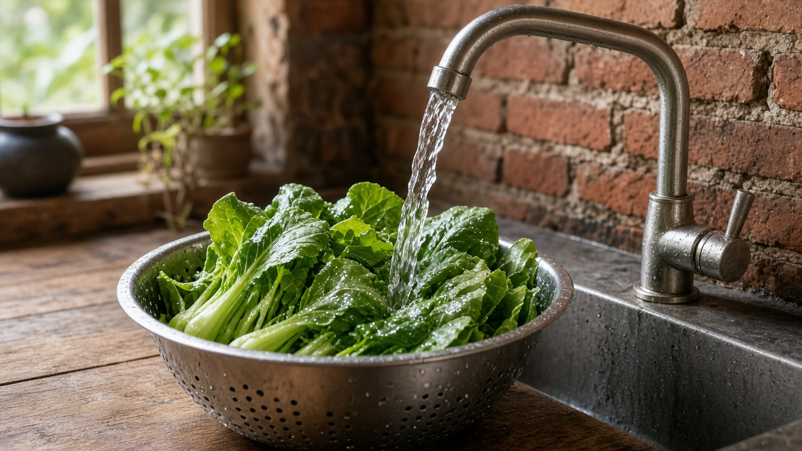
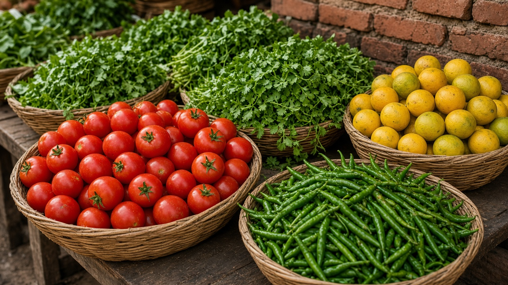

Pesticide Residues and Human Health
Published on August 20, 2026

Pesticide residues are traces of insecticides, herbicides, and fungicides that remain on crops, in stored grain, or in the body after spraying, dipping, or household use. Harvest too soon after application, over-dosing, and poor washing leave more residue than labels intend. Organophosphates and carbamates inhibit cholinesterase and can cause acute poisoning in mixers and sprayers; pyrethroids irritate skin and nerves; some older organochlorines linger in fat. Chronic dietary intake at levels near legal limits is still under study for effects on development, fertility, and cancer. Residues also appear in breast milk and in the urine of children who live near treated fields, showing that food is not the only pathway.
Risk is highest for people who mix concentrates without gloves, reuse empty containers, or spray upwind without masks. Consumers face a different pattern: small daily doses across many foods, plus occasional spikes when a vegetable is harvested before the waiting period ends. Maximum residue limits are tools for trade and surveillance, not proof that a meal is harmless for a toddler. Washing, peeling, and cooking reduce some surface residues but do not remove systemic compounds that moved into the plant. Laboratory screening of market baskets, especially of leafy greens, spices, and fruits eaten with skin, is the practical way to see whether farmers and traders are following pre-harvest intervals.
Health protection combines clinic readiness with residue literacy. Primary care workers should recognize cholinergic crisis after spraying accidents and have atropine protocols, while schools can teach that empty bottles are not water jugs. Residue monitoring should publish which crops fail most often so extension services can target training rather than blaming all farmers equally. Integrated pest decisions that cut spray frequency also cut residue, yet this page is about the health trail after application, not farm policy in the abstract. Families can diversify produce sources, wash under running water, and keep pesticides locked away from kitchens. Residues become a manageable risk when the waiting period, the label dose, and the laboratory result are treated as one chain of care.

विषादी अवशेष भनेका कीटनाशक, झारनाशक र ढुसीनाशकका अवशेष हुन् जो छर्कने, डुबाउने वा घरेलु प्रयोगपछि बाली, भण्डारित अन्न वा शरीरमा रहन्छन्। प्रयोगपछि चाँडै टिप्नु, अधिक मात्रा र कम धुलाईले लेबलले चाहेभन्दा बढी अवशेष छोड्छ। अर्गानोफस्फेट र कार्बामेटले कोलिनेस्टेरेज रोक्छन् र मिसाउने तथा छर्ने कामदारमा तीव्र विषाक्तता ल्याउन सक्छन्; पाइरेथ्रोइडले छाला र स्नायु चिडचिडाउँछन्; केही पुराना अर्गानोक्लोरिन बोसोमा बस्छन्। कानुनी सीमा नजिकको दीर्घकालीन आहार सेवन विकास, प्रजनन र क्यान्सरमा पर्ने प्रभावका लागि अझै अध्ययनमा छ। अवशेष स्तन दूध र उपचारित खेत नजिक बस्ने बालबालिकाको मूत्रमा पनि देखिन्छ, जसले खाना मात्र मार्ग होइन भन्ने देखाउँछ।
जोखिम सबैभन्दा उच्च हुन्छ जब मानिसले पञ्जाबिना सांद्र पदार्थ मिसाउँछ, खाली भाँडो पुनः प्रयोग गर्छ वा मास्कबिना हावाको दिशाविपरीत छर्छ। उपभोक्ताले फरक ढाँचा भोग्छन्: धेरै खानामा सानो दैनिक मात्रा, र पर्खाइ अवधि सकिनुअघि तरकारी टिपिएको बेला कहिलेकाहीं उछाल। अधिकतम अवशेष सीमा व्यापार र निगरानीका औजार हुन्, बच्चाको भोजन निरुपद्रव छ भन्ने प्रमाण होइनन्। धुने, बोक्रा तान्ने र पकाउनेले सतहका केही अवशेष घटाउँछन् तर बोटभित्र गएका प्रणालीगत यौगिक हटाउँदैनन्। पातदार साग, मसला र बोक्रासहित खाइने फलको बजार टोकरी प्रयोगशाला जाँच किसान र व्यापारीले टिप्ने अन्तराल पालेका छन् कि छैनन् हेर्ने व्यावहारिक तरिका हो।
स्वास्थ्य सुरक्षाले उपचार कक्ष तयारी र अवशेष साक्षरता जोड्छ। प्राथमिक उपचारकर्मीले छर्कने दुर्घटनापछिको कोलिनर्जिक संकट चिन्नुपर्छ र एट्रोपिन प्रक्रिया राख्नुपर्छ, विद्यालयले खाली बोतल पानीको भाँडो होइन भनी सिकाउन सक्छ। अवशेष निगरानीले कुन बाली सबैभन्दा धेरै असफल हुन्छ प्रकाशित गर्नुपर्छ ताकि विस्तार सेवाले सबै किसानलाई समान दोष नदिई तालिम लक्षित गर्न सकोस्। छर्कने आवृत्ति घटाउने एकीकृत कीट निर्णयले अवशेष पनि घटाउँछ, तर यो पृष्ठ प्रयोगपछिको स्वास्थ्य बाटोमा केन्द्रित छ, अमूर्त खेत नीतिमा होइन। परिवारले तरकारी स्रोत विविध बनाउन, बग्ने पानीमा धुन र विषादी भान्साबाट ताल्चा लगाएर राख्न सक्छन्। पर्खाइ अवधि, लेबल मात्रा र प्रयोगशाला नतिजालाई एउटै हेरचाह शृङ्खला मान्दा अवशेष व्यवस्थापनयोग्य जोखिम बन्छ।
कीटनाशक अवशेष कीटनाशक, खरपतवारनाशक और फफूंदनाशक के वे अंश हैं जो छिड़काव, डुबान या घरेलू उपयोग के बाद फसल, भंडारित अनाज या शरीर में रह जाते हैं। उपयोग के बाद जल्दी तोड़ना, अधिक मात्रा और कम धुलाई लेबल से अधिक अवशेष छोड़ते हैं। ऑर्गैनोफॉस्फेट और कार्बामेट कोलिनेस्टेरेज रोकते हैं और मिलाने तथा छिड़कने वाले श्रमिकों में तीव्र विषाक्तता ला सकते हैं; पाइरेथ्रॉइड त्वचा और तंत्रिका चिढ़ाते हैं; कुछ पुराने ऑर्गैनोक्लोरिन वसा में रहते हैं। कानूनी सीमा के पास दीर्घकालिक आहार सेवन का विकास, प्रजनन और कैंसर पर प्रभाव अभी अध्ययन में है। अवशेष स्तन दूध और उपचारित खेत के पास रहने वाले बच्चों के मूत्र में भी दिखते हैं, जिससे पता चलता है कि भोजन अकेला मार्ग नहीं है।
जोखिम तब सबसे अधिक होता है जब लोग बिना दस्ताने सांद्र पदार्थ मिलाते हैं, खाली बर्तन फिर उपयोग करते हैं या बिना मास्क हवा के विपरीत छिड़कते हैं। उपभोक्ता अलग पैटर्न झेलते हैं: कई खाद्य पदार्थों में छोटी दैनिक मात्रा, और प्रतीक्षा अवधि समाप्त होने से पहले सब्जी तोड़ने पर कभी उछाल। अधिकतम अवशेष सीमा व्यापार और निगरानी के उपकरण हैं, यह प्रमाण नहीं कि बच्चे का भोजन निरुपद्रव है। धोना, छीलना और पकाना कुछ सतही अवशेष घटाते हैं पर पौधे में गए तंत्रगत यौगिक नहीं हटाते। पत्तेदार साग, मसाला और छिलके सहित खाए जाने वाले फल की बाजार टोकरी की प्रयोगशाला जाँच यह देखने का व्यावहारिक तरीका है कि किसान और व्यापारी तोड़ने का अंतराल पालते हैं या नहीं।
स्वास्थ्य सुरक्षा उपचार कक्ष तैयारी और अवशेष साक्षरता जोड़ती है। प्राथमिक उपचारकर्मी को छिड़काव दुर्घटना के बाद कोलिनर्जिक संकट पहचानना चाहिए और एट्रोपिन प्रक्रिया रखनी चाहिए, विद्यालय सिखा सकते हैं कि खाली बोतल पानी का बर्तन नहीं है। अवशेष निगरानी को प्रकाशित करना चाहिए कि कौन सी फसल सबसे अधिक असफल होती है ताकि विस्तार सेवा सभी किसानों को समान दोष दिए बिना प्रशिक्षण लक्षित कर सके। छिड़काव आवृत्ति घटाने वाले एकीकृत कीट निर्णय अवशेष भी घटाते हैं, पर यह पृष्ठ उपयोग के बाद के स्वास्थ्य मार्ग पर केंद्रित है, अमूर्त खेत नीति पर नहीं। परिवार सब्जी स्रोत विविध बना सकते हैं, बहते पानी में धो सकते हैं और कीटनाशक रसोई से ताला लगाकर रख सकते हैं। प्रतीक्षा अवधि, लेबल मात्रा और प्रयोगशाला परिणाम को एक देखभाल शृंखला मानने पर अवशेष प्रबंधनीय जोखिम बनता है।